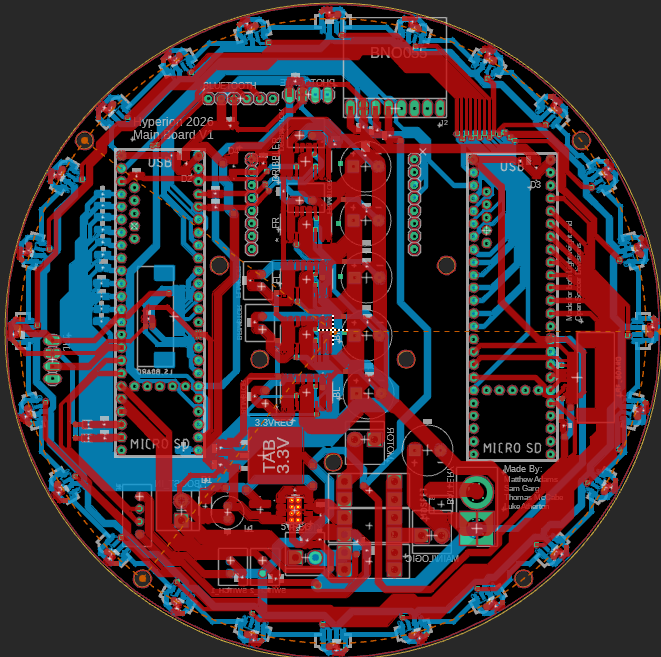
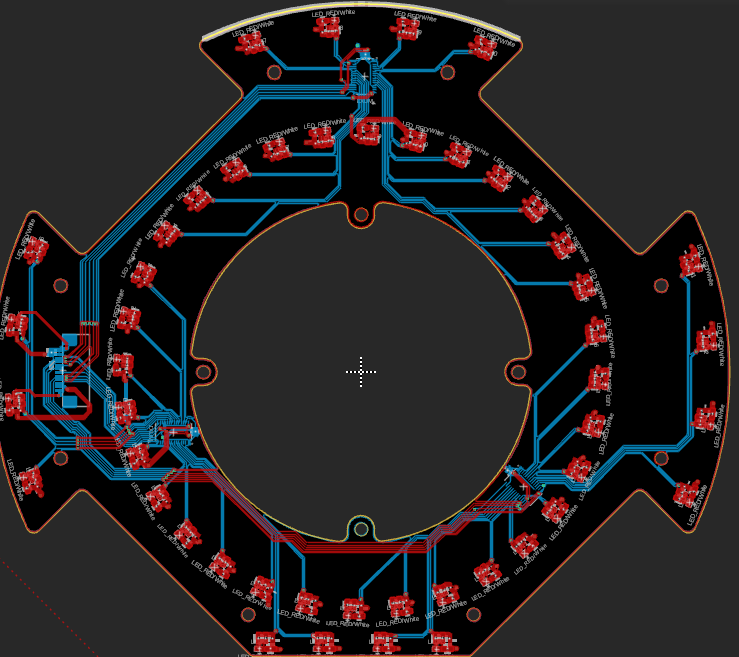
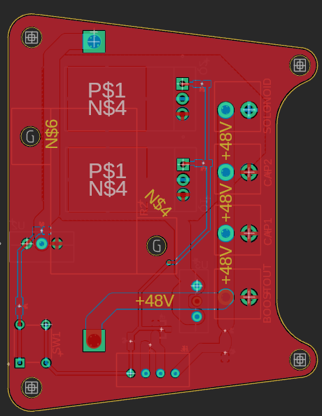
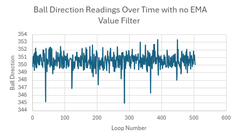
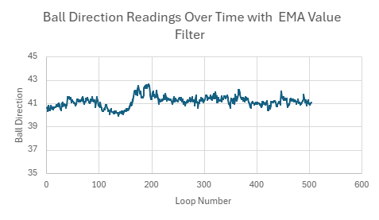
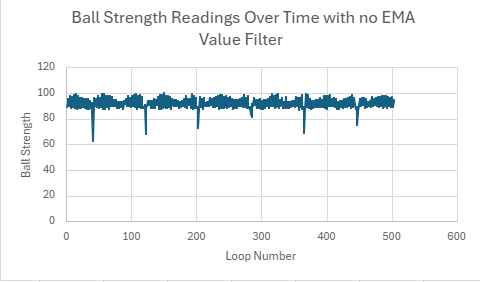
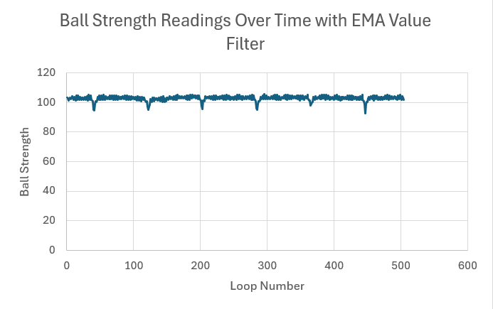

Brisbane Boys' College
THE MACHINE
Hyperion 2026's Beast
Brisbane Boys' College
Hyperion 2026's Beast
CAD Design

Overview
For Structural and Electrical we use the CAD program Autodesk Fusion 360 to 3D model and design our PCB’s. The machinery used to make and manufacture our design was the Bambu Lab 3D printer with PLA and ABS filament, as well as a CNC miller with 3mm thick aluminum. We order PCBs from the company JLCPCB. The components of these boards are ordered from a variety of websites and companies, but we try and order them from Digikey, making them our main website for ordering components.
Chassis
The two main plates of the robot are CNC-machined from 3 mm 6061 AND 1.6mm 7075 aluminium. This design helps keep the centre of mass low to the ground, improving stability during rapid movement, while also providing increased strength and durability during impacts.
Movement System
The drive system consists of four motors arranged in a diagonal cross (X-shape), providing improved power, speed, and balance for full 360-degree movement of the robot. The motors are secured using custom motor brackets to ensure proper alignment and structural stability.
To enable this omnidirectional movement, the motors are paired with double omnidirectional wheels. These allow the robot to move smoothly in any direction while maintaining good grip due to increased surface contact with the field. The wheel frames are made from ABS filament, while the rollers are made from silicone with a metal core. The rollers are mounted around a metal axle to keep them securely in place.
DCX19 16:1 9V Maxon motors were selected for their compact size and relatively high torque. They are powered at 12 V to increase their overall power output.
Vision / Detection Systems
For ball detection, 24 infrared sensors are soldered onto the main board and arranged in a circular pattern. A custom 3D-printed mount separates the sensors, allowing for accurate and precise detection of the ball’s direction and signal strength.
For line detection, a custom-made PCB is mounted to the underside of the robot. It features two concentric rings, enabling fast and reliable detection of the white boundary line.
The vision system uses an OpenMV camera pointed upwards towards a cone-shaped reflective foil surface. This reflector is supported by a clear acrylic tube, allowing for full 360-degree vision of the field and clear detection of the coloured goals. The acrylic tube is mounted on an adjustable plate, enabling calibration of the mirror’s position to account for small inconsistencies in the camera setup.
Ball Control System
The dribbler mechanism builds upon previous Small-Size League (SSL) designs. The assembly features a 3D-printed housing that accommodates a three-gear drivetrain. Configured with a 1:4 speed-multiplying gear ratio, allowing the motor to operate at a lower, more efficient RPM while driving the dribbler roller at high velocities to optimize power consumption. To ensure reliable ball control, the roller is moulded around a 3D printed rod in silicone, maximizing grip ensuring ball stays the capture zone to prevent slippage.
Electrical · PCB Design and Power

Main Board
The main board consists of a power regulation circuit, ball detection sensors, a camera, a Bluetooth module, a compass, dual microcontrollers, and motor driver circuits. The robot is powered by a 12.6 V, 1300 mAh LiPo battery, which is connected to the main board via an XT-60 extension cable.
The 12 V supply is connected to five motor controllers (VNH7070). Four of these control the drive motors, while the fifth controls the dribbler motor. The 12 V supply, along with 3.3 V and ground, is also connected via a three-pin JST connector to a custom kicker control circuit.
The 12 V supply is stepped down to 5 V and then to 3.3 V. The 5 V rail powers the dual microcontrollers (Teensy 4.1), camera (OpenMV H7), Bluetooth module (HC-05), and photogate. The 3.3 V rail supplies the 24 infrared sensors (TSSP77038TR), the compass (BNO055), and a custom light ring PCB through a 12-pin FFC cable.

Light Ring Board
The Light Sensor Board consists of 48 groups of components, each including phototransistors, LEDs, resistors, and smoothing capacitors. The first 16 groups are arranged into four segments, with each segment containing four groups positioned near the outer edges of the robot between the wheels. This placement allows the robot to detect and respond to the line more quickly.
The remaining 32 groups are arranged in a circular pattern in front of the wheels, enabling the defender to position itself closer to the goal without entering the goal box. Each group produces a signal that is routed through three 16-bit multiplexers, which output four analog pins. Therefore, reducing the number of pins required on the main processor.

Kicker Board
The kicker system is powered by a dedicated kicker control board that receives a 12 V supply from the main board. This voltage is fed into a boost converter, which increases the voltage to approximately 48 V. The boosted voltage is then stored in two parallel 4700 μF capacitors, allowing the circuit to accumulate the energy required to generate a high-current pulse for the solenoid. The capacitor voltage is monitored by the main board through a voltage divider, which reduces the 48 V capacitor voltage to a safe level that can be measured by the main microcontroller. This enables the robot to determine when the capacitors are fully charged and ready to fire.
When a kick command is received, two N-channel enhancement MOSFETs act as electronic switches, allowing the stored energy in the capacitors to be rapidly discharged through the solenoid. The resulting high-current pulse generates a strong magnetic field, which drives the solenoid mechanism and propels the ball forward. For safety, the circuit also includes a controlled discharge system that can be activated when the robot is powered off. Pressing the discharge button enables a MOSFET that directs the stored energy through a 50 Ω resistor, safely discharging the capacitors and reducing the risk of accidental operation.
Software · Orientation & Stability

An Overview
In the heat of a match, the robot is constantly bumped, spun, and pushed by other players. Without a sense of direction, it would quickly become disoriented, driving toward its own goal by mistake. The BNO055 Inertial Measurement Unit (IMU) acts as the robot's "Inner Ear," providing a rock-solid sense of balance and heading.
Maintaining North
While the TSSP "eyes" find the ball, the IMU keeps the robot facing the correct way. We use the IMUPLUS mode, which combines accelerometer and gyroscope data to give us a stable "Heading" (the 0 to 360-degree angle the robot is facing).
The Stability Math
To keep the robot straight, we use a PID Controller (Proportional, Integral, Derivative). The IMU tells us our current angle, and we compare it to our target (usually 0°). The difference between them is the "Error." The robot then applies a counter-rotation (Correction) to cancel out that error.
Key Functions
| begin() | Initializes the sensor via I2C and checks if the "Inner Ear" is actually plugged in. |
| setExtCrystalUse() | Tells the sensor to use an external clock for higher mathematical precision. |
| getEvent() | Snaps a picture of the robot's current orientation in 3D space. |
| normaliseAngle180() | A helper function that ensures the robot understands that 359° is actually just 1° away from 0°. |
Software · Ball Detection

Welcome to the definitive technical breakdown of our robot's Ball Detection and Tracking System. This comprehensive overview details how our robot perceives its environment, filters sensory noise, and implements advanced mathematical algorithms to navigate the field with aggressive, pinpoint precision.
System Architecture Overview
Our robot distributes its computational workload across two high-performance microcontrollers (Teensy 4.1 boards) connected via a high-speed UART serial interface operating at 115,200 baud.
1. The Physics of the IR Ball & Waveform Analysis
To track the soccer ball, we must first understand the signal it transmits. The ball emits a digitally modulated infrared light at a wavelength of 940nm, powered by a high-capacity 18350 Lithium-Ion battery.
Waveform Characteristics
Calculating the Duty Cycle
Based on these physical parameters, we can calculate the exact percentage of time the ball is actively transmitting light:
Note: While the pure physical waveform equates to a ~24% duty cycle, our software
utilizes a tuned normalization factor (BALL_DUTY_CYCLE = 0.35f) to perfectly calibrate raw
sensor sensitivity against real-world ambient conditions.
2. "The Eyes": Asynchronous Data Acquisition
Correcting the Misconceptions
Our previous website documentation contained several critical inaccuracies regarding how the "Eyes" process data.
for(i=0; i<255; i++)) and only used the top four strongest sensors for
vector summation.Non-Blocking Sampling Loop
The Secondary Teensy leverages a hardware interrupt timer (readTimer) that
fires every 20µs (READ_PERIOD = 20).
Because the TSSP77038TR IR receiver outputs a LOW logic state when it detects
40kHz infrared light, subtracting the reading from 1 inverts it (1 - digitalReadFast). This
ensures that an active detection adds a point to our accumulator, while no signal adds zero.
Every 10ms (PROCESS_PERIOD = 10000), a second timer
triggers the data processing sequence, normalizing the raw counts against the total sampleCount
collected during that window.
3. Digital Signal Filtering: Exponential Moving Averages (EMA)
In a raw robotic environment, infrared data is notoriously noisy due to stadium lighting, reflections off the field surface, and minor sensor misalignments. Because a physical ball moves continuously and cannot instantaneously teleport, we filter out erratic data spikes using an Exponential Moving Average (EMA) filter.
The EMA blends the current instantaneous processed sensor reading with the historical
weighted average of that specific sensor. The behavior is governed by the smoothing factor α (set to
0.4f in our firmware):
Where Yt is the new filtered value, Xt is the newly calculated raw reading, Yt−1 is the previous filtered value, and α = 0.4 balances real-time responsiveness against structural stability.
Telemetry Performance Analysis
The real-world impact of our EMA filter is clearly visible when comparing raw vs. filtered telemetry data:
Direction Stabilization
Without a filter, directional readings constantly flutter by several degrees and experience severe dropouts. Implementing the EMA smooths out the curve, giving the navigation systems a clean trajectory.


Strength Stabilization
Raw signal strength data drops significantly when the ball is positioned between two sensors. The EMA filter eliminates these severe dropouts, ensuring the robot maintains a stable perception of how close the ball is.


4. The Math Behind Ball Vector Tracking
Once every sensor's value has been cleaned via the EMA filter, we execute a comprehensive Vector Summation across the entire 24-sensor ring to isolate the exact angle and distance of the ball.
Step 1: Spatial Vector Mapping
During initialization, each of the 24 sensors is assigned a permanent spatial coordinate on a Cartesian plane based on its physical location around the perimeter of the robot:
Step 2: Full-Ring Vector Summation
Rather than taking a limited subset of sensors, we multiply every sensor's spatial
coordinate by its filtered signal intensity (weightedValues[i]), calculating a unified resultant
vector:
Step 3: Direction & Remapped Strength Calculations
The final relative ball direction (θ) is derived using a four-quadrant arctangent calculation, adjusted for our chassis orientation coordinate system:
The raw magnitude of this vector (√(xsum² + ysum²)) initially sits
within a highly compressed window due to environmental factors. To give our navigation systems the
high-resolution feedback necessary for precise tracking, we apply a linear remap using a safety floor threshold
(TSSP_STR_FLOOR = 20.0f):
This scales our usable range cleanly from 0% (out of range/noise) to 100% (directly touching the robot).
5. "The Captain": Exponential Orbit Control
The Primary Teensy receives the clean ballDir and ballStr
packets via UART and immediately handles navigation. Instead of charging blindly at the ball, the robot must
smoothly orbit around it to approach it from behind, lining up a clean shot toward the
opponent's goal. To execute this fluid movement, the "Captain" uses specialized exponential curves rather
than simple linear adjustments.
1. Vector Normalization
We first convert the absolute direction of the ball into a relative system ranging from [−180°, 180°]:
2. Strength Factor Calculation
The closer the robot gets to the ball, the more aggressively it needs to orbit around it. We track this proximity via an exponential curve bounded between 0.0 and 1.0:
3. Calculating the Angle Shift
Next, we calculate the angleEffect. If the ball is directly in front of us
(0°), the angle effect is small. If the ball is off to the side or behind us, the effect exponentially
increases to force a sharp, defensive wrapping maneuver, capped at a maximum offset of 90°:
4. Directing the Drivetrain Direction and Speed
The final movement angle (mInfo._dir) and overall travel speed
(mInfo._spd) are dynamically modulated based on this calculated offset:
Tactical Summary
strengthFactor drops toward zero. The robot ignores the
orbit offset and charges directly toward the ball at high speed (SURGE_SPEED).strengthFactor scales up aggressively. The robot
dynamically slows its forward momentum and shifts its drive angle up to 90° perpendicular to the ball,
creating a seamless, high-speed tracking arc right around the ball's circumference.Software · Drive System
An Overview
Think of the Drive System as the robot's legs and steering wheel combined. While the "Captain" decides which direction we want to go, the Drive System translates that master plan into exact electrical instructions for each individual wheel. It calculates how fast every motor needs to spin to move the robot smoothly at any angle while simultaneously spinning or maintaining its heading.
Motor Hardware Control (VNH7070)
To bring the wheels to life, our Teensy processor talks directly to VNH7070 motor drivers. Controlling them requires a specific sequence of electronic handshakes:
InA and
InB pins HIGH during initialization. This alerts the drivers and prepares them for
action.LOW and the
other HIGH (e.g., InA Low, InB High). We then modulate the PWM pin to define the
exact velocity.InA and
InB HIGH actively locks the motor in place (braking). Setting them both
LOW allows the wheels to coast and spin freely.The Drive Math & Kinematics
To coordinate multi-directional movement, the system relies on trigonometry. By applying a
cosine function, the code projects the target movement vector onto each motor's unique physical angle. It also
factors in a correction value (cor) to handle rotation.
If the math spits out a speed value greater than the maximum hardware limit of 255, the code dynamically scales all motor speeds down proportionally. This prevents clipping, ensuring the robot doesn't accidentally drive in the wrong direction when pushed to its limits.
Software · Line Avoidance

The updated LightSystem library detects the white boundary lines of the
RoboCup field to actively steer the robot away from the edges. The system preempts standard behaviors the
instant a line is detected to prevent out-of-bounds penalties.
Hardware — 48-Sensor Multiplexed Array
To effectively find boundary lines, the robot utilizes a specialized hardware array of 48 infrared light sensors arranged across the bottom plate.
inPin) to rapidly cycle through 16 binary addresses. The robot simultaneously reads three
analog outputs (LS_OUT_1, LS_OUT_2, LS_OUT_3), gathering three sensor
readings at once while saving microcontroller pins.muxIndex) maps the multiplexer readings back
to their exact schematic indices within the sensorReadings array to account for physical
wiring layouts.Dynamic Calibration & Binarization
During initialization, the calibrate() function samples ambient light
readings and adds a safety margin of 100 to establish an individualized white-line threshold for every single
sensor. During runtime, raw analog data is converted into a simple boolean array (onWhite). If a
sensor's reading exceeds its calibrated threshold, it is flagged as a 1 (on the white line); otherwise, it
returns a 0 (safe on the green field).
Direction Algorithm — Center of Mass
The system replaces the previous cluster-detection algorithm with a precise Center of Mass
calculation. Every sensor is pre-assigned an x and y coordinate in a normalized space
(lsCoords). The inner 32 sensors are automatically mapped in a perfect circle using
trigonometry, while the outer 16 use hardcoded coordinates mapped to the physical frame.
The robot calculates a weighted average of the x and y positions of only the sensors
currently reading white. This outputs a single raw vector representing the line's position. To prevent jerky
adjustments from minor glares or noise, a hysteresis filter ignores vectors with a magnitude weaker than 0.4,
preserving the previous frame's vector (line_prev) instead.
Field Transformation & State Logic
To ensure the robot knows where the line is relative to the actual field rather than its
own spinning body, the raw vector's angle is processed through a compass correction algorithm. By factoring in
the current compass heading (cDir), the local vector is transformed into a field-relative
frame.
This corrected vector feeds into a dynamic line state machine that adapts to how deep the robot crosses the boundary:
Avoidance Execution
The final processed line vector is sent directly to the main movement loop. The robot
commands its motors to move in the exact opposite direction of the line vector's angle (line.arg),
actively pushing it back into play.
The magnitude of the vector (line.mag), representing how deeply the robot
crossed the boundary, is used as the error input for a Proportional-Integral-Derivative (PID) controller. This
dynamically scales the recovery speed: minor boundary touches trigger gentle, calculated nudges, while major
overshoots trigger explosive, maximum-speed reversals.
Software · Vision

The camera script runs as a standalone MicroPython program on the OpenMV RT — a dedicated vision co-processor that handles all colour detection entirely independently of the main Teensy. Every frame, it hunts for three coloured objects on the field, finds their pixel centroids and scaled area, and fires the results over UART to the Teensy in a compact byte packet. The Teensy never touches raw image data — it only ever sees the final processed coordinates.
Camera Initialisation — Locked Exposure
Before the main loop begins, the camera is configured to produce deterministic,
reproducible images. Auto-gain, auto-white-balance, and auto-exposure are all explicitly disabled.
Exposure is fixed at 12,000 µs and the frame is cropped to a 240×240 pixel window —
doubling the tracking area of previous iterations while maintaining high processing speeds by avoiding a full
VGA scan.
Locking the exposure is critical. RoboCup venues vary wildly in lighting; a camera on auto would shift its colour interpretation between matches. With a fixed exposure, thresholds tuned in the pits will remain reliable for the entire match.
Colour Thresholds — LAB Colour Space
Detection uses the LAB colour space rather than RGB. LAB separates
luminance (L) from colour information (A/B), making the detector robust to shadows and brightness changes.
Each threshold tuple defines a bounding box: (L_min, L_max, A_min, A_max, B_min, B_max).
| Index 0 — Blue Goal | High L, negative B — cool blue. Targets the opponent's defend goal. |
| Index 1 — Yellow Goal | High L, high positive B — bright warm yellow. Targets the team's attack goal. |
| Index 2 — Orange Ball | High L, positive A & B — the orange ball sits in a distinct LAB region. |
The script uses blob.code() directly as the slot index (0, 1, or 2). This
ensures that the data array maintains a consistent order regardless of which object is detected first.
Blob Detection & Centroid Extraction
img.find_blobs() scans for regions matching any of the three thresholds.
Noise is filtered via pixels_threshold=20 and area_threshold=20. Blobs are merged
and then sorted by area descending so only the largest candidate for each colour is tracked.
Centroids and scaled areas (divided by 100) are extracted into the transmission array.
UART Packet — Byte Stream to Teensy
The OpenMV fires a data packet at 115,200 baud. It opens with two header
bytes (200, 122) for frame-sync, followed by the X, Y, and Area of the targets.
While the script calculates areas for all, it currently transmits a specific selection to the Teensy to
maintain compatibility with existing receiver logic.
Software · Teensy-Side Processing
Once the OpenMV fires its 8-byte packet over UART, all the heavy lifting shifts to the Teensy's Camera C++ library. This layer is responsible for validating the incoming stream, converting raw pixel centroids into real-world centimetres, computing angles and distances to each target, and finally producing the movement vectors the strategy loop actually drives from.
Initialisation — Camera::init()
A single call to init() opens the hardware serial port connected to the
OpenMV at 115,200 baud. This must be called once during setup before the main loop ever calls
update().
Packet Reception & Validation — Camera::update()
Every call to update() attempts to consume exactly one vision packet from the
serial buffer. The function first checks that enough bytes are available, then reads the first byte and
peeks at the second — if the pair does not match the expected header (200,
122), the call returns immediately. This prevents stale or partially-received packets from
corrupting the robot's world model.
Coordinate Shift — Camera::shift()
Raw pixel values from the OpenMV are centred on the top-left corner of its
120×120 crop window. shift() re-origins both axes to the centre of the robot by
subtracting a fixed CAMERA_PIXEL_SHIFT offset.
Pixel → Centimetre Conversion — Camera::px_to_cm()
A linear regression formula maps the pixel scale to real-world distance. This gives the Teensy an approximate physical scale it can use for distance and angle maths.
C++ Library — Function Reference
| init() | Opens the UART serial link to the OpenMV at 115,200 baud. |
| update(attackBlue) | Reads and validates packet, assigns attack/defend goals. |
| localise_to(targX, targY) | Estimates field position and computes move vectors. |
| shift(x, y) | Re-centres coordinates from top-left (0,0) to robot-centre. |
| px_to_cm(px) | Converts pixel offset into real-world centimetres. |
Software · Inter-Robot Communication

An Overview
Imagine we have two robots on a soccer field. If both robots chase the ball at the same time, they will crash into each other or leave the goal wide open. To play as a team, they need to talk. We use HC-05 Bluetooth modules to let the robots "whisper" to each other across the field.
How they Talk (The "Packet" System)
The robots don't just send random numbers; they send a structured "envelope" of information called a Packet. Every message starts with two Start Bytes (the number 255 twice) to ensure valid data. The packet contains: Ball Strength, Ball Direction, Goal Angle, Goal Distance, Battery Level, and X/Y coordinates.
How they Decide (The "Role Weighting" Logic)
Each robot calculates a "Score" for itself and its teammate based on several factors. The robot with the higher score becomes the Attacker. Factors include Ball Strength (0-40pts), Attack Cone (0 or 20pts), Goal Alignment (0 or 15pts), Defensive Gap (0-15pts), and Battery Level (0-10pts).
Fail-Safe's
In the heat of a game, things go wrong. Dead Radio: if Bluetooth disconnects, the robot immediately defaults to Defender. Blind spots: if neither robot can see the ball, they stop switching roles. Battery/Fuel Rule: if a robot's battery is critically low, it is forced into Defender role.
Software · Attack Strategy
To avoid constantly hitting the ball toward their own defending goal, an attacking robot needs an efficient movement strategy to successfully get behind the ball and drive it toward the opponent’s goal.
We evaluated four potential movement strategies to find the optimal balance between performance and processing complexity:
| Orbit Type | How it Works | Positives | Negatives |
|---|---|---|---|
| Cases Orbit | A set movement angle triggered when the ball is within specific angle ranges. |
|
|
| Fixed Offset Orbit | Adds or subtracts a constant value to the ball's direction. |
|
|
| Exponential / Polynomial Orbit | A constantly changing offset value scaled dynamically to the ball's direction. |
|
|
| PID Orbit | Uses vertical and horizontal vectors to wrap smoothly around the ball. |
|
|
The chosen movement strategy must meet the following criteria:
Based on our requirements, an Exponential Orbit strategy will be implemented. This method optimizes performance while relying on just a single constant to tune the overall behavior.
Integration: This plan will be built into the TSSP library as a dedicated function named orbit().
Software · Defend Strategy
If the attacking robot cannot transition back in time to stop an opponent's counterattack, the goal is left vulnerable. To prevent conceding goals, a dedicated defensive robot must hang back and guard the goal line. What algorithms should drive this defensive behavior? We analyzed four primary defensive strategies to determine the most effective method for goal protection and positioning: The defensive algorithm must fulfill the following technical benchmarks:Defender Robot: Positioning Strategy
The Problem
Background Research: Defending Methods
Method
What is it?
Positives
Negatives
Distance Constrained
Orbits the ball normally but halts forward progression once a specific distance threshold from the goal is reached.
Reactive Zone Defence
Sits between the goal and mid-field, moving or orbiting only when the ball actively crosses into its defensive sector.
Floating Defender (Vectors)
Continuously shifts to stay between the ball and the goal, dynamically managing distances to both objects.
Standard Vector Defender
Tracks the ball's lateral movement, shifting side-to-side while maintaining a completely fixed distance from the goal.
Strategy Requirements
We selected the Floating Defender using Vectors strategy. This ensures the robot stays strictly on the intercept path between the ball and the goal. Velocity limits and software dampening will be used to counteract any potential vector instability.
Integration: Due to dependencies on multiple system objects and cross-referencing sensors, this defensive logic will be implemented directly inside the main file.